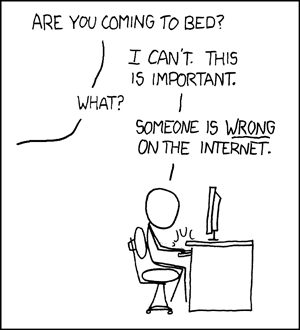
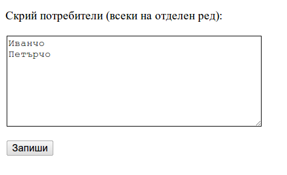
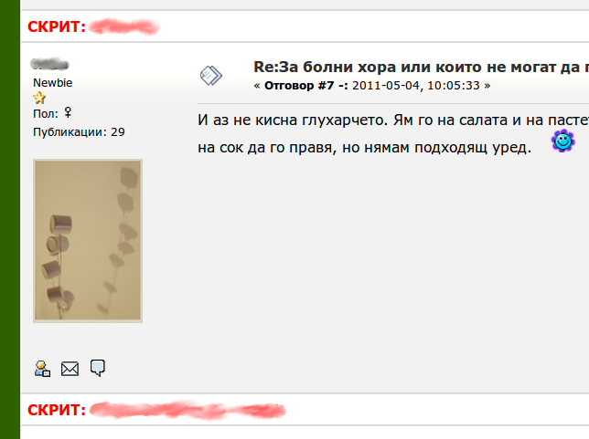

В интернет форумите е пълно с хора с "различни от нашите" представи за света. Това е така дори и във форуми с "наши хора" като този на "Земя на заем"

Постоянно се изкушаваме да ги поправим или даже да се скараме с тях, което обикновено не води до нищо добро. Моето решение на това как да не губя време и енергия за излишни спорове е просто да не виждам мненията на най-честите дразнители. Резултатът е това разширение за Google Chrome (един от най-добрите браузъри в момента).
Разширението работи само за Google Chrome браузъра. Ако използвате друг, или превключете, или пийте една студена вода.
Инсталирайте разширението като щракнете тук или върху "Install" бутона по-горе.
След инсталацията отворете страницата с опциите (достъпна от Tools/Extensions екрана) и конфигурирайте имената на потребителите, чиито мнения не желаете да виждате. Напишете потребителските имена като слагате всяко на отделен ред. Накрая натиснете бутона "Запиши".

След записването и презареждането на страницата на форума, мненията на хората ще бъдат заместени с кратък "СКРИТ: Иванчо" коментар.

За момента се скриват само мнения. Цитираните мнения от други потребители остават показани. Поради факта, че съдържанието се филтрира при показването на страницата на форума на вашия компютър, не е възможно да се почистват лични бележки и имейл нотификации.
Кодът се помещава на github.
За докладване на дефекти и предложения за подобрения моля използвайте github issues.